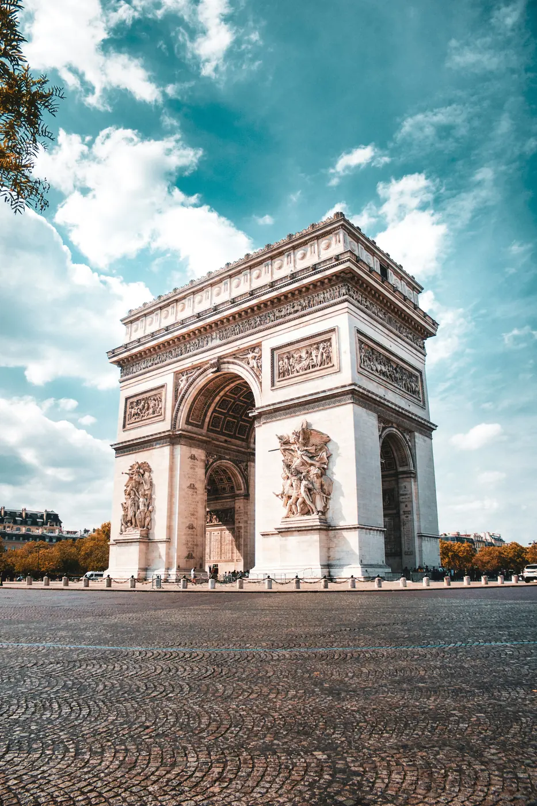
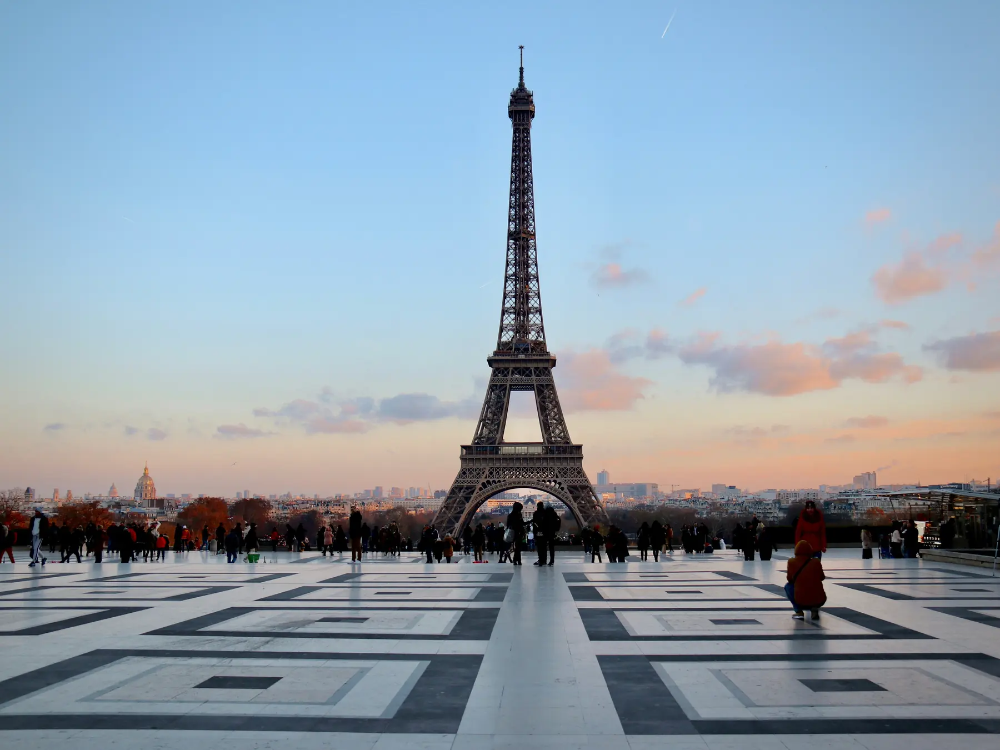
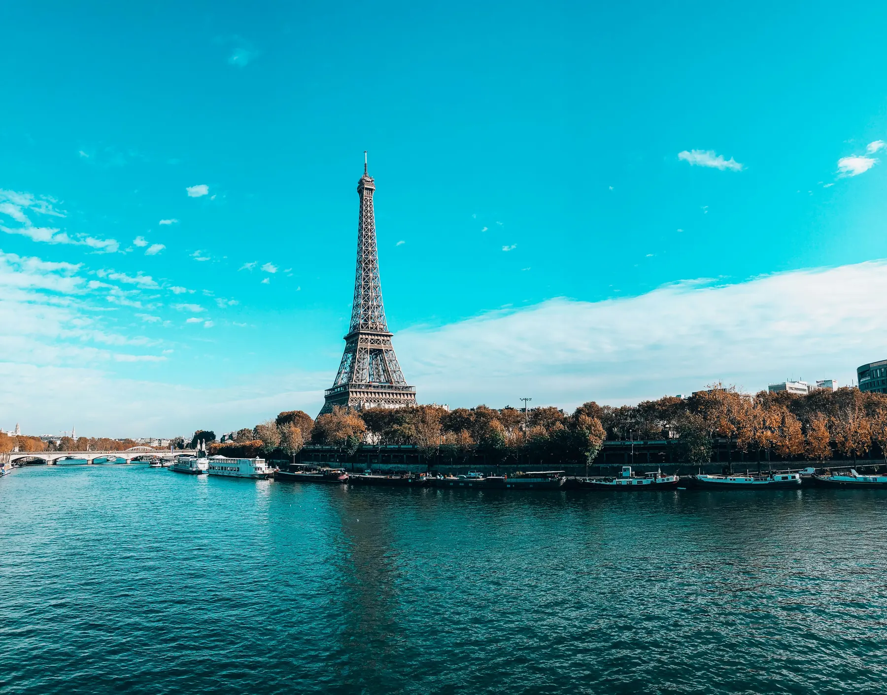

A promessa
Paris, sem pressa.
Viagens desenhadas no seu ritmo. O bairro, a mesa, a hora — você escolhe. Nós abrimos a cidade.
A promessa
Viagens desenhadas no seu ritmo. O bairro, a mesa, a hora — você escolhe. Nós abrimos a cidade.
Role
A sua viagem
Três formas de entrar na cidade, no tempo que for seu.

3 dias
A avenida abre até o monumento. Você atravessa no seu passo.

4 dias
O Trocadéro quando o céu vira pêssego e a cidade acende.

2 dias
Barcos, pontes e a margem esquerda, sem relógio no pulso.
Arco do Triunfo, Torre Eiffel ao crepúsculo e o Sena — a cidade, de três lados.
Sobre Paris
Paris é mais do que um destino — é um ritmo. Do Marais ao Sena, cada viagem aproxima você da cidade, da mesa e das pessoas.
Viagens feitas no seu passo. Os cartões-postais, vistos com calma — e os lugares que não cabem neles.
Como a cidade se prova
4estações abertas
48hAs primeiras horas, sem pressa
12Bairros para se perder
3Roteiros prontos para começar
1Promessa, feita para você
Manifesto